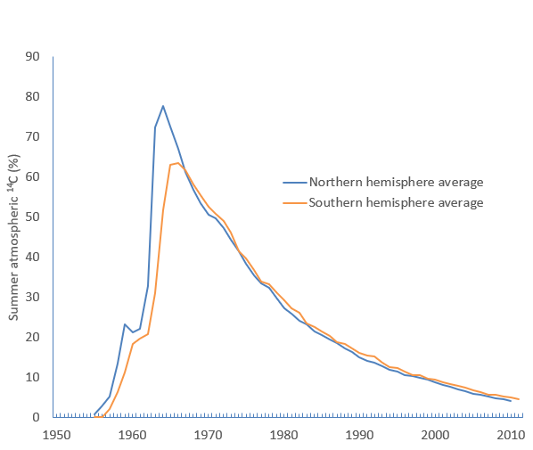
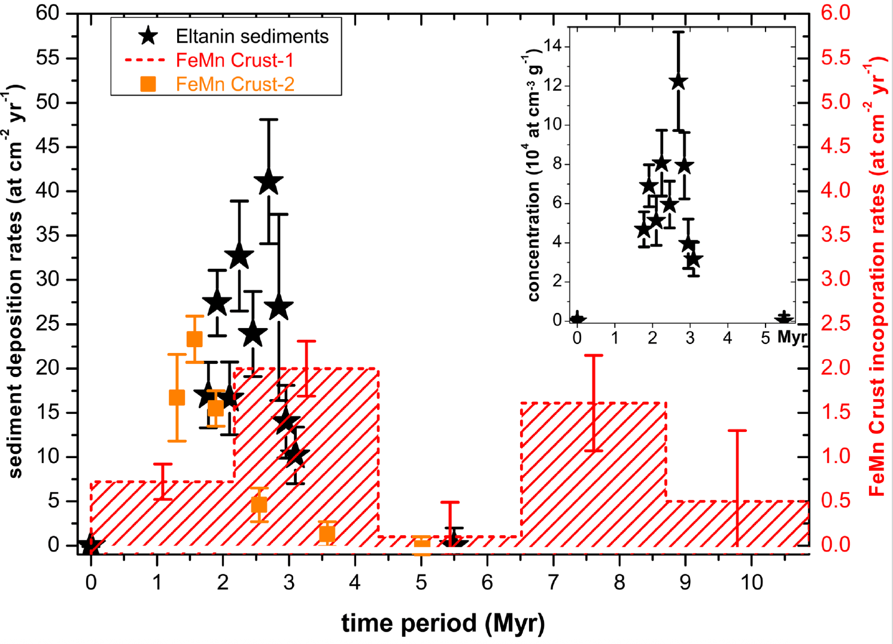
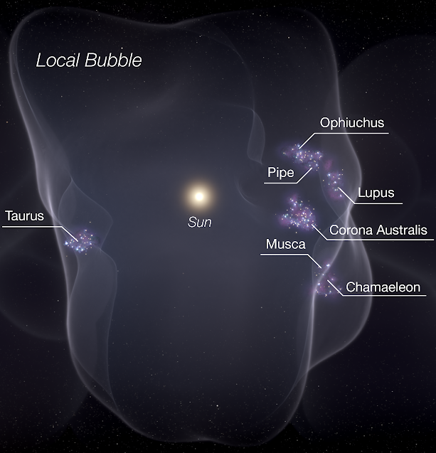

### 深海に刻まれた超新星爆発の痕跡 #### 海底探査が解き明かす宇宙の『泡』の起源 --- ### 自己紹介 <div class="profile-container"> <div class="profile-left"> * さめ(мег-сск) * ⚛️ VRChat物理学集会の主催 * 🧑🎓 社会人学生として通信制大学在学中 * 得意分野: * 📸 コンピュータビジョン (画像認識/点群処理) * 🌍 空間情報処理 (地理情報/リモートセンシング) * ☁️ クラウドインフラ設計/IaC (AWS, GCP) * [GitHub](https://github.com/s-sasaki-earthsea-wizard) * [YouTube](https://www.youtube.com/@SyotaSasaki-EW) * [Speaker Deck](https://speakerdeck.com/syotasasaki593876) </div> <div class="profile-right"> <img src="assets/images/icon_circle.png" alt="avatar" height="350px" width="350px"> </div> </div> --- ### 今日話すこと <div class="simple-box"> * 海底から採取された試料に含まれる放射性同位体が数百万年前に起きた超新星爆発を示唆 * 鉄60は地球に天然では存在しない * 超新星爆発する直前の大質量星の内部で生成される * 海底から採取された試料に鉄60が含まれることから、数100万年前に起きた超新星爆発を示唆 * 激レアな放射性同位体の鉄60の半減期をどう測った？ </div> --- ## 鉄60とは何か？ --- ### 鉄60 (⁶⁰Fe) の基本的性質 <div class="simple-box"> * **放射性同位体**: 半減期 260万年 * **宇宙でのみ生成**: 大質量星の内部で生成 * **β⁻崩壊**: ⁶⁰Fe → ⁶⁰Co → ⁶⁰Ni + γ崩壊 * ⁶⁰Niのγ線から間接的に観測 </div> <img src="assets/images/fe60-decay-series.png" height="300px" alt="Fe-60崩壊図式"> <div class="caption">Credit: Wallner et al. PRL 114, 041101 (2015) </div> --- ### 鉄60はどこで作られる？ <div class="two-column"> <div class="column-left"> <div class="simple-box"> **大質量星の内部** * 太陽の8~25倍の質量 * 高温・高密度の中性子過剰環境 * $^{58}$Feの二重中性子捕獲で生成 * 超新星爆発で宇宙空間に放出 </div> </div> <div class="column-right"> <img src="assets/images/Keplers_supernova.jpg" height="400px"> <div class="caption">ケプラーの超新星 (1604年)</div> </div> </div> --- ### 地球に存在する鉄60 <div class="simple-box"> * インド洋、太平洋、大西洋で採取された深海堆積物から鉄60が検出 * **どこからどのように、いつ地球にやってきた？** </div> <div class="caption">深海堆積物の採取を行ったEltanin調査船。1962-74年に活動</div> --- ## 鉄60の半減期測定 --- ### なぜ半減期測定が重要？ <div class="simple-box"> * **試料の年代決定に重要！** * 炭素14は考古学史料の年代測定に利用されている * 炭素14の放射能から年代を推定 </div> <div class="two-column"> <div class="column-left"> <img src="assets/images/The_Temple_Scroll_(11Q20)_-_Google_Art_Project.jpg"> <div class="caption">死海文書は炭素14年代測定法で紀元前の史料だと立証された！</div> </div> <div class="column-right">  </div> </div> --- ### なぜ鉄60の半減期測定は困難？ <div class="simple-box"> * $t_{1/2}>$100万年という長半減期 * 極微量の試料 </div> <br> <div class="highlight-box"> * 半減期が長くても大量にあれば測れる * 微量でも半減期が短いなら測れる * **半減期が長くて微量な同位体は測定困難！** </div> --- ### 鉄60の人工合成 <div class="simple-box"> * 天然には存在しないので**人工的に大量合成** * **銅へのプロトン照射**による核反応で合成 * 濃度：⁶⁰Fe/Fe ～ 10⁻⁴~10⁻⁸ </div> <br> <div class="highlight-box"> * ⁶³Cu + p (191-590 MeV) → ⁶⁰Fe + 副産物 <br> * ⁵⁷Co, ⁵⁸Co, ⁵⁹Fe, ⁶⁰Co... などの副産物 </div> --- ### 副産物による妨害 <div class="simple-box"> **問題1：γ線スペクトルがノイズだらけ** * 目的：⁶⁰Co→⁶⁰Niのγ線(1173, 1332 keV)を測定 * 妨害：副産物の核種からの大量γ線 * ☢️短期間で大量のγ線を出すので危険 **問題2：⁶⁰Coも生成される** * 目的：⁶⁰Fe→⁶⁰Co→⁶⁰Niを観測したい * 妨害：⁶⁰Feの崩壊で生成されたものなのか、プロトン照射で生成されたものなのか区別できない </div> --- ### 副産物への対策 <div class="highlight-box"> **解決策その1：長期間冷却で副産物除去** * 1-12年の放置で短半減期核種が自然消滅 * ⁵⁷Co (272日), ⁵⁸Co (71日), ⁵⁹Fe (44日) </div> <div class="highlight-box"> **解決策その2：化学分離** * ⁶⁰Coは⁶⁰Feは異なる元素なので化学的に分離可能 * 先に冷却期間を設けて短半減期の核種を減らすことで、このプロセスが実行不可能 </div> --- ### 鉄60の半減期測定 <div class="method-comparison"> **2015年研究 (Wallner et al.)** * 手法：⁶⁰Fe/⁵⁵Fe の相対測定 * 革新：両方とも放射性核種で同条件測定 * 利点：系統誤差のキャンセル効果 * 結果：(2.50 ± 0.12) $\times$ 10⁶年 </div> --- ### 炭素14年代測定法との類似 <div class="method-comparison"> **炭素14年代測定法との類似** * ¹⁴C/¹²C比測定 → 既知の基準との比較 (大気中の¹⁴C濃度の変動を除去) * 化石燃料の燃焼や核実験の影響 * ⁶⁰Fe/⁵⁵Fe比測定 → 既知半減期(⁵⁵Fe: 2.744年)との比較 * 同じ加速器加速器質量分析装置(AMS)で分離 </div> --- ### 相対測定法の革新性 <div class="simple-box"> **なぜ画期的だったか？** * **同じ検出器**: 両核種とも同じAMSで測定 * **同じ測定条件**: ビーム強度変動などが相殺 * **比較基準があることで系統誤差をキャンセルできる！** </div> --- ## 深海堆積物が語る超新星爆発 --- ### 深海探査からの発見 <div class="simple-box"> * **深海堆積物から鉄60が検出** * 1.7-3.2百万年前と6.5-8.7百万年前に**2つのピーク** </div>  <div class="caption">Credit: Wallner et al. Nature. 2016 April 7; 532(7597): 69–72. </div> --- ### 全球規模の分布 <div class="simple-box"> * **世界中の海洋で検出** * インド洋、太平洋、大西洋のすべての深海堆積物から検出 * **地球規模の現象**: 地球全域での分布 * **150万年間にわたるピークの分布** * 継続的なイベント発生の示唆 * **隕石起源ではない**: 宇宙塵では説明できない量 * **星間起源**: 超新星爆発による星間物質 </div> --- ### 複数超新星説 <div class="simple-box"> **観測事実** * 150万年の長期間にわたる流入 * 単一超新星では説明困難 **解釈** * **連続的超新星爆発**: 2-3個/百万年 * **局所泡構造**: 過去1400万年の超新星爆発で形成された？ </div> --- ### 局所泡 <div class="impact-analysis"> * 太陽系は星間物質がとても少ない「泡」の中 * 超新星爆発で泡が形成された？ * 扇風機で砂を吹くと、スカスカの領域を囲う砂の壁ができるイメージ </div>  --- ### まとめ <div class="impact-analysis"> * **鉄60の半減期測定**: 微量かつ長半減期 * 微量の放射性同位体、鉄60の半減期は、半減期が既知の同位体、鉄55との比較によって測定された * **世界中の深海堆積物から鉄60が検出** * 深海堆積物に含まれる鉄60は過去1400万年の間に起きた超新星爆発を示唆 * 鉄60の地球への流入は150万年続いた? * 局所泡の形成過程の手がかり？ * **海底探索から大昔の天文現象を理解できる！** </div> --- ### 主要参考文献 - Wallner et al., Settling the Half-Life of ⁶⁰Fe: Fundamental for a Versatile Astrophysical Chronometer, PRL 114, 041101 (2015) - DOI: 10.1103/PhysRevLett.114.041101 - Wallner et al., Recent near-Earth supernovae probed by global deposition of interstellar radioactive 60 Fe, Nature. 2016 April 7; 532(7597): 69–72. - DOI: 10.1038/nature17196